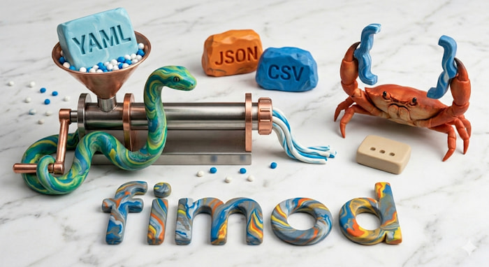

🐍🦀 fimod — the data shaper CLI
🏗️ Mold your data, shape your CI, play with your pipelines 🪶 Python-powered molding without Python installed.
💡 DRY your pipelines · Slim your container images · Tame your configs
fimod (Flexible Input, Mold Output Data) embeds Pydantic Monty (a Rust implementation of Python) in a single binary (~2.3 MB, UPX-compressed). You write the transform logic; fimod handles parsing, format detection, and I/O.
# 🎯 One-liner
fimod s -i data.json -e '[u for u in data if u["active"]]'
# 📜 Reusable script
fimod s -i input.csv -m cleanup.py -o output.json
# 🔀 Format conversion
fimod s -i config.yaml -e 'data' -o config.toml
# 🔥 Fetch from URLs — no curl, no wget, no pipes!
fimod s -i https://api.github.com/repos/pytgaen/fimod -e 'data["name"]' --output-format txt
✨ Features
-
Python you already know
No new DSL. Write
for,if, comprehensions, string methods — it's just Python. -
Single binary
No runtime, no
pip install, no dependencies. One ~2.3 MB binary (UPX-compressed) that works everywhere. -
All the formats
JSON · NDJSON · YAML · TOML · CSV · TXT · Lines — auto-detected from extension.
-
Batteries included
re_*regex ·dp_*dotpath ·it_*iteration ·hs_*hashing ·msg_*logging ·gk_*validation ·env_subst— no imports needed. -
🚀 Awesome 🔥 Your input can be an HTTPS request!
Awesome:
-i https://...just works — fimod fetches (viareqwestwith proxy and HTTPS support), parses, and transforms in one shot. Goodbyecurl | jq!
👀 A taste of what fimod can do
🐍 Pure Python transforms — Rust-powered I/O, serialization & builtins:
# YAML to JSON, filter active users, sort by name
fimod s -i users.yaml -e '[u for u in data if u["active"]]' -e 'it_sort_by(data, "name")' -o result.json
# Filter active users, then group by role — Unix pipes just work
fimod s -i users.json -e '[u for u in data if u["active"]]' | fimod s -e 'it_group_by(data, "role")'
# Enrich records with Python string methods — try this in jq...
fimod s -i users.json -e '[{**u, "slug": u["name"].lower().replace(" ", "-"), "domain": u["email"].split("@")[1]} for u in data]'
📦 Registry molds — reusable recipes, one @name away:
# 🔀 Patch a YAML config with dot-path assignments
fimod s -i deployment.yaml -m @yaml_merge --arg set="spec.replicas=3,metadata.labels.env=prod" -o deployment.yaml
# 🔐 Anonymize PII fields with SHA-256
fimod s -i users.json -m @anonymize_pii --arg fields=email,phone -o users_anon.json
📦 More molds in the fimod-powered registry:
| Mold | Description |
|---|---|
@gh_latest |
GitHub release resolver |
@download |
wget-like fetch |
@poetry_migrate |
Poetry → uv/Poetry 2 |
@skylos_to_gitlab |
dead code → GitLab Code Quality |
🍿 Even more taste... (in-place, regex, log parsing, env templating)
# 🔒 Anonymize emails in-place — replace with SHA-256 hashes
fimod s -i customers.csv -e '[{**r, "email": hs_sha256(r["email"])} for r in data]' --in-place
# 🕵️ Mask IPs with regex — 192.168.1.42 → 192.168.x.x
fimod s -i logs.json -e '[{**r, "ip": re_sub(r"\d+\.\d+$", "x.x", r["ip"])} for r in data]'
Run fimod mold list to browse all built-in molds.
🗺️ Guides
Start here if you're new to fimod.
-
Quick Start
Install fimod and run your first transform in 2 minutes.
-
Concepts
The pipeline, Monty, molds, and the security model — how it all fits together.
-
Mold Scripting
Write transforms with built-in regex, dotpath, iteration, and hash helpers.
-
CLI Reference
All options and modes — slurp, check, no-input, in-place, args, debug, and more.
📚 Reference
Lookup tables and complete specifications.
-
Formats
JSON, NDJSON, YAML, TOML, CSV, TXT, Lines — behavior and options for each.
-
Built-ins
Complete signatures for
re_*,dp_*,it_*,hs_*,msg_*,gk_*,env_subst,set_exit,set_input_format,set_output_format,set_output_file,args,headers. -
Mold Defaults
# fimod:directives — embed format and option defaults directly in scripts. -
Exit Codes
--checktruthiness table andset_exitbehavior explained.
🍳 Cookbook
Practical recipes — filtering, aggregation, regex, format conversion, validation, data generation, slurp, and more.
⚠️ Project Status
Early-stage software
fimod is young software, built with AI-assisted development ("vibe coding").
- Monty is an early-stage Rust implementation of Python by Pydantic. Its API is unstable and may introduce breaking changes.
- fimod depends directly on Monty and inherits that instability. Expect breaking changes as both projects mature.
- Versioning follows Semantic Versioning — breaking changes bump the major version.
- Built-in helpers (
re_*,dp_*,it_*,hs_*,msg_*,gk_*,env_subst) are implemented in Rust to complement Monty's limited stdlib. In particular, regex functions use fancy-regex syntax (Rust/PCRE2 flavour), not Python'sremodule — see Built-ins → Regex.
Regex: Fimod built-ins vs Monty's re module
Fimod was originally built on Monty v0.0.6, which had no regex support.
We introduced re_search, re_sub, re_findall, etc. as Fimod built-in functions to fill that gap — a good example of the challenges of moving fast alongside a young runtime.
Since Monty v0.0.8, import re works — Monty implements a subset of Python's re module.
Both approaches now work side by side:
- Fimod's
re_*built-ins — direct access to fancy-regex, including advanced features like variable-length lookbehind/lookahead import re— familiar Python API, but only partially implemented in Monty (also backed by fancy-regex under the hood)
The re_* built-ins are here to stay for the foreseeable future (at least until late 2027). As Monty's re module matures, we'll reconsider.
Since import re is already well-known to Python developers, the documentation focuses on the re_* built-ins which are specific to Fimod.